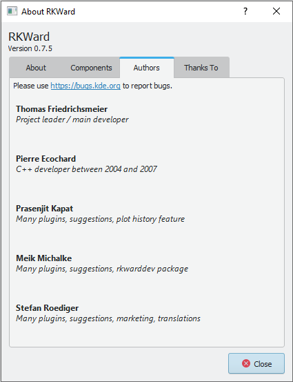

1 About RKWard
1.1 RKWard Mission statement
RKWard is meant to become an easy to use, transparent frontend to the R-language, a very powerful, yet hard-to-get-into scripting-language with a strong focus on statistic functions. It will not only provide a convenient user-interface, however, but also take care of seamless integration with an office-suite. Practical statistics is not just about calculating, after all, but also about documenting and ultimately publishing the results.
RKWard then is (will be) something like a free replacement for commercial statistical packages. In addition to ease of use, three aspects are particularily important:
It will be a transparent interface to the underlying R-language. That is, it will not hide the powerful syntax, but merely provide a convenient way, in which both newbies and R-experts can accomplish most of their tasks. A GUI can never provide an interface to the whole power of a language like R. In some cases users will want to tweak some functions to their particular needs and esp. to automate some tasks. By making the “inner workings” visible to the user, RKWard will make it easy for the user to see where and how to use R-syntax to accomplish their goals.
For the output, RKWard strives to separate content and design to a high degree. It will not try to design its own tables/graphs, etc, which have to be converted to the style used in the rest of a publication by hand. Currently RKWard uses HTML for its output. Using appropriate style definitions reformatting this output to match the rest of the publication will be easily doable. In future releases RKWard will even seek stronger integration with existing office suites.
It relies on a language, that is not only very powerful, but also extensible, and for which dozens of extensions already exist.
And of course, it is free (as in free speech).
Current status
Perhaps the best way to get an impression of the current state of RKWard (other than installing and trying it) is to have a look at the Screenshots. A status page focused on the internal components is here.
In summary:
RKWard currently offers a lot of useful features for developing R code. This functionality makes RKWard highly useful as an IDE for R experts, today. The number of graphical dialogs to give access to statistical functions is still rather limited. Users coming from competing graphical statistics suites will find a lot is still missing, but possibly the functionality you need most is already implemented in the growing number of plugins. Why don’t you give it a try to find out? It is also possible to add your own dialogs as plugins (see Developer Information#Plugin developers). As far as office integration is concerned, RKWard still has a long way to go. However, results are stored to in HTML format, however, making it easy to copy-and-paste or import them into text-processing or other office tools.
1.2 About RKWard
RKWard is developed by a community of volunteers.

1.3 RKWard 0.7.5 - 24 Oct 2022
A new release, RKWard 0.7.5, is available for download, today.
The most visible changes are the inclusion of many new and improved code snippets, and option to restart the R backend without leaving RKWard (this can be very useful when trying to make sure that a script is fully reproducible), and various improvements to code completion in scripts and the R Console.
As usual, we’re looking forward to your feedback suggestions, and contributions!
The changes in detail:
New features and improvements
- Added: Partial completions (Tab-key) consider completion candidates from all visible completion groups
- Added: R’s dynamic completions (importantly for “:::”, “?”, and “@”) are merged into the already provided completions
- Added: Add option to offer code completion/hinting in all file types not just R scripts (e.g. in .Rmd files)
- Changed default behavior (new installations, only): Up/down without alt navigate completion items if visible in console/editor
- Added: Provide tooltips on symbols in scripts and R console
- Added: Many new basic and advanced R, R Markdown and LaTeX snippets, including complete R Markdown templates
- Added: Allow to select search provider, when searching for a term online
- Added: Allow to restart R backend (e.g. for testing that scripts or packages will work in a fresh session)
- Changed: Actions to restart the R backend, interrupt all commands and configure the R backend arranged in a hmburger menu
- Added: Crosstabs N to N: Simplify labels, add option to control table layout
- Added: Change mechanism for detection of object changes
Bug fixes
- Fixed: Backend failed to start when installed in a path with spaces on Windows volumes without 8.3 support
- Fixed: Trying to restart backend could cause a hang, on Windows
- Fixed: In corner cases, cancelling commands could lead to a lockup
- Fixed: IRT Cronbach’s Alpha did not work for subsets, if the data.frame name contains dots
- Fixed: Action to remove several rows in data editor, simultaneously, always remained disabled
- Fixed: Workspace browser would not always show change, immediately, when object type changes
- Fixed: Crash when using the “Git blame” kate plugin
- Fixed: Problem installing R support package in some configurations
- Fixed: Menubar would disapper after opening script editor, in some configurations
- Fixed: Very long error messages during R markdown preview could cause the preview window to become too wide
- Fixed: Expresssions spanning several lines would not be shown, correctly, in “R Console”-mode script preview
- Fixed: Fix focus problems, and better efficiency for data previews (as used in data import dialogs)
- Fixed: Excel import plugin failed to accept file name
- Fixed: Fix zooming help/output pages with Ctrl+scroll wheel, when compiled with QWebEngine
- Fixed: Fix problem handling rkward:// links from dialogs on some sytems
- Fixed: Fix object name completion for (irregular) names starting with numbers or underscores
Last update: 08/26/2023 - 14:11:59 -03